Шия стає «кам’яною» до вечора
Хочеться постійно її крутити, витягувати або розминати руками.
6-денний курс для тих, у кого після ноутбука, телефону або керма шия стає «кам'яною», плечі затискає, а у верхній частині спини накопичується важкість.
Хочеться постійно її крутити, витягувати або розминати руками.
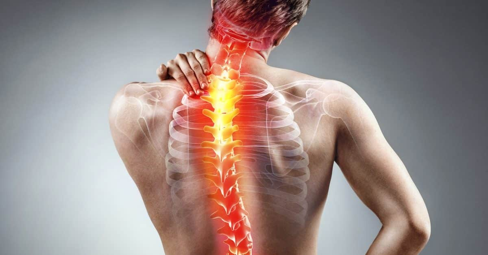
Після ноутбука чи телефона верхня частина спини відчувається важкою і втомленою.
Наче затиснення піднімається від шиї до потилиці і заважає зосередитися.
Поставу все важче тримати, а шия та верх спини напружуються ще сильніше.
Сидіння, телефон, ноутбук, кермо — це не один випадковий день, а повторюване навантаження. Тому проблема часто стає фоном у житті, а не справді минає.
Шия і плечі починають напружуватись раніше, навіть якщо день ще не закінчився.
Тіло постійно просить короткого полегшення, але проблема повертається знову.
Стає важче сидіти, працювати, гуляти або просто нормально розслаблятися ввечері.
З’являється думка, що це «норма», хоча тіло просто живе в постійному затисненні.
Бо разова розминка або масаж можуть дати полегшення, але якщо немає короткої послідовної системи, тіло швидко повертається до того ж стану. Тут важлива не «ідеальна вправа», а регулярний ритм без хаосу.
Ти не витрачаєш час на пошук, сумніви і постійне «з чого почати сьогодні».
Це не просто «щось для шиї». У курсі зібрані базові напрямки, які найчастіше потрібні людям із сидячим способом життя.
Щоб зменшити відчуття скутості й повернути більше легкості в рухах.
Щоб верх спини менше перевантажувався під час сидіння.
Щоб тілу було простіше тримати голову і плечі в кращому положенні.
Щоб мати прості способи допомогти собі, коли затиснення вже накопичилось.
Кожен день дає новий крок — без перевантаження, але з логічним переходом від заняття до заняття.
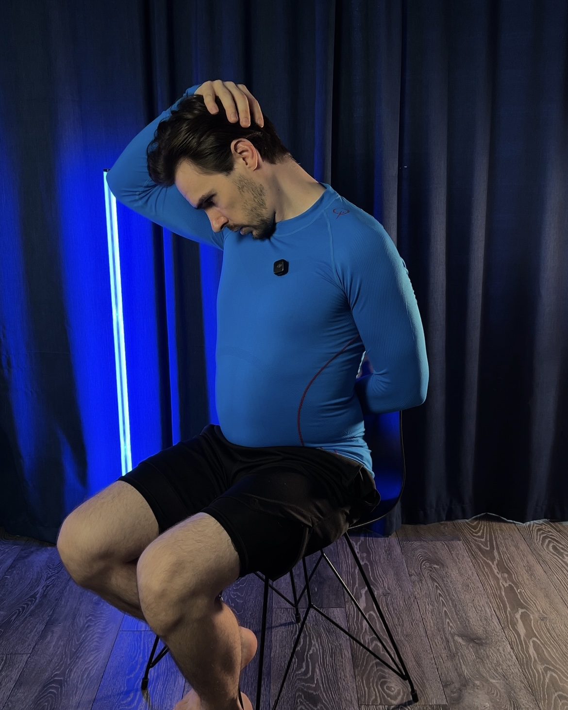
Знімаємо накопичене напруження і входимо в курс без різкого навантаження.
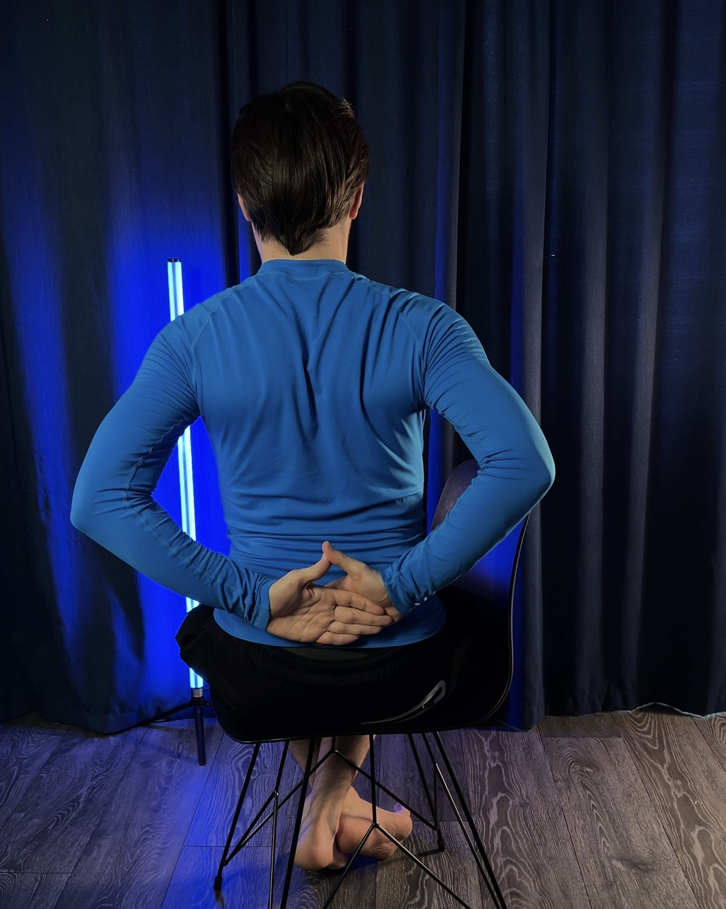
Працюємо з тією зоною, яка часто посилює дискомфорт у шиї та між лопатками.
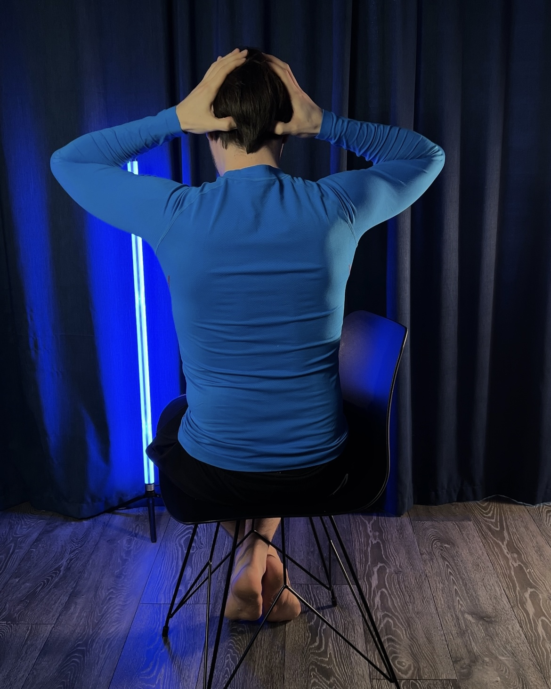
Додаємо прості техніки, які можна використовувати і поза курсом.
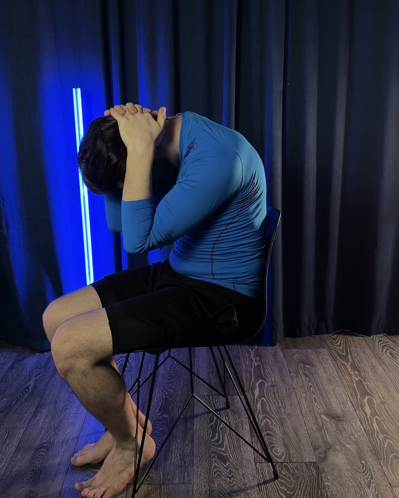
Включаємо вправи, які допомагають верхній частині спини працювати краще.
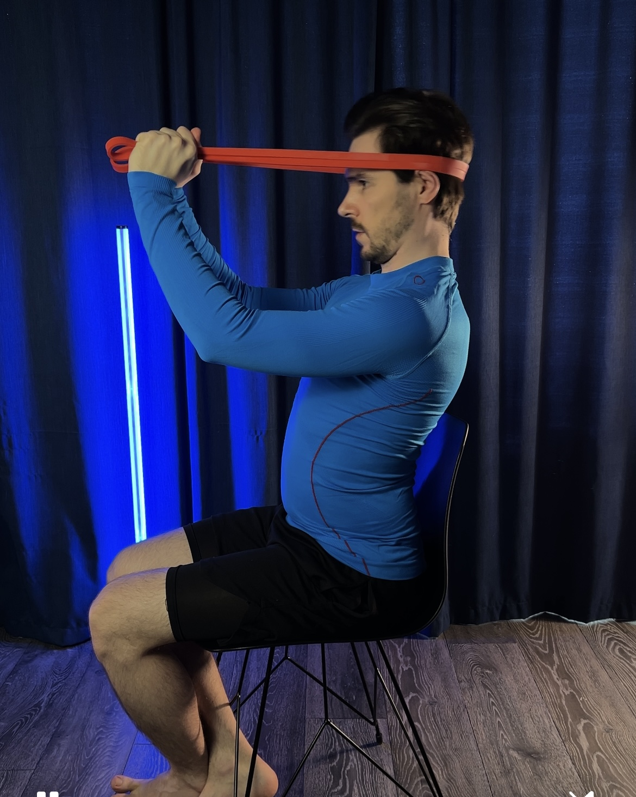
Даємо тілу базу, щоб менше «складатись» і затискатися в сидячий день.
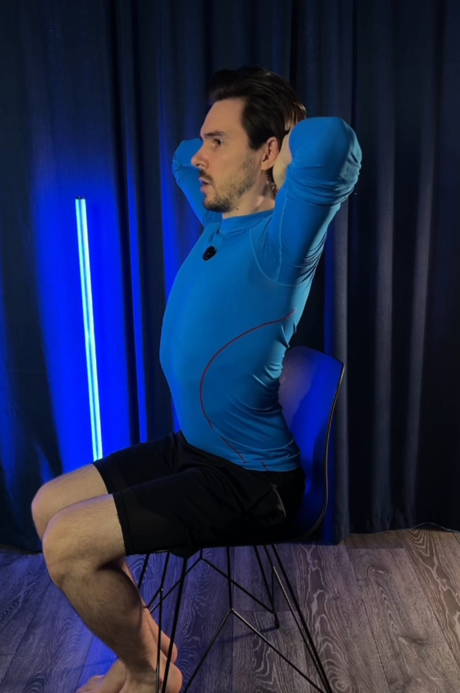
Збираємо все в короткий зрозумілий формат, до якого можна повертатися.
Натисни нижче — і подивишся ціну та доступ до курсу.
Усе просто: тобі не потрібно нічого шукати, планувати чи збирати з різних відео.
Швидко та безпечно через платіжну систему.
Одразу після оплати бот відкриває доступ до курсу.
Це працює як нагадування і допомагає не кинути через 2–3 дні.
Без залу, без складних вправ, у форматі, який реально вписати в день.
Великий курс часто відкладають «на потім». Тут формат навпаки короткий і реалістичний: одне заняття на день, 10–15 хвилин, без перевантаження. Мета — дати тобі не ще одну папку з відео, а ритм, який ти реально пройдеш.
Найкраще підійде тим, хто хоче почати з простого формату і не готовий до довгих тренувань.
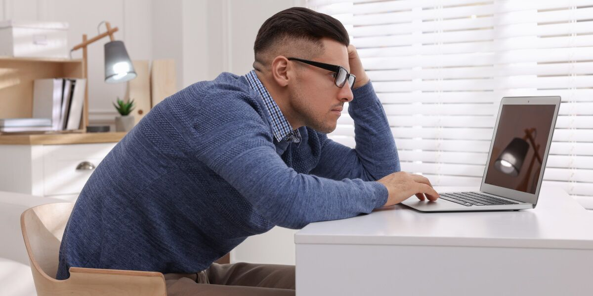
Після 6–8+ годин за екраном шия і плечі напружуються майже щодня.
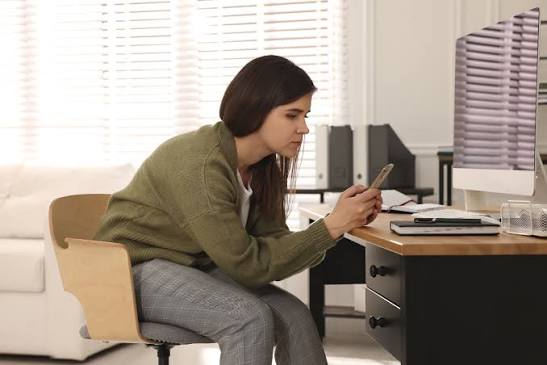
Наприкінці дня з’являється важкість у шиї та між лопатками.
Статична поза накопичує затиснення у шиї, плечах і верхній частині спини.
Якщо є різко сильний біль, виражене оніміння чи слабкість у руці, свіжа травма або симптоми, які тебе лякають — краще спочатку звернутися на індивідуальний розбір.
Шия, плечі та міжлопаткова зона не так швидко «забиваються» протягом дня.
✓ Більш комфортний кінець робочого дняМенше потреби постійно розминати шию, піднімати плечі чи змінювати позу кожні 5 хвилин.
✓ Особливо цінно для тих, хто працює за комп'ютером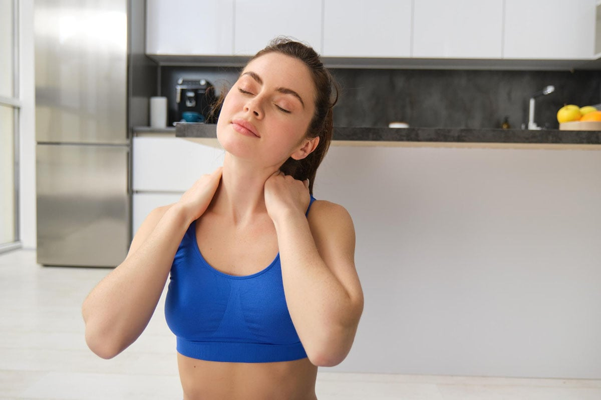
Рухи відчуваються вільнішими, а тіло менше стискається вгорі після сидячого дня.
✓ Саме на це й побудована послідовність курсу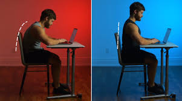
Голова менше тягнеться вперед, плечі розслабляються, а верх спини менше перевантажується.
✓ Те, що часто відчувається у повсякденних справахЯ працюю з болем у шиї, спині та суглобах понад 10 років і бачу одну типову проблему: люди не страждають від браку вправ — вони страждають від хаосу. Щось масажують, щось знаходять на YouTube, щось відкладають «на понеділок» — і в підсумку роками живуть із тим самим напруженням.
Саме тому я створив цей формат: короткий, конкретний і зручний для реального життя. Щоб ти відкрив(ла) Telegram, увімкнув(ла) відео і просто повторив(ла) за мною 10–15 хвилин без зайвих рішень.
Найкраще про формат говорять ті, хто вже спробував проходити курс день за днем.
Щоб уже цього тижня пройти перші заняття і перестати відкладати шию та верх спини «на потім».
Безпечна оплата через захищену платіжну систему. Доступ до Telegram-бота відкривається одразу після оплати.
Якщо протягом 14 днів курс зовсім не принесе користі — я готовий повернути кошти.